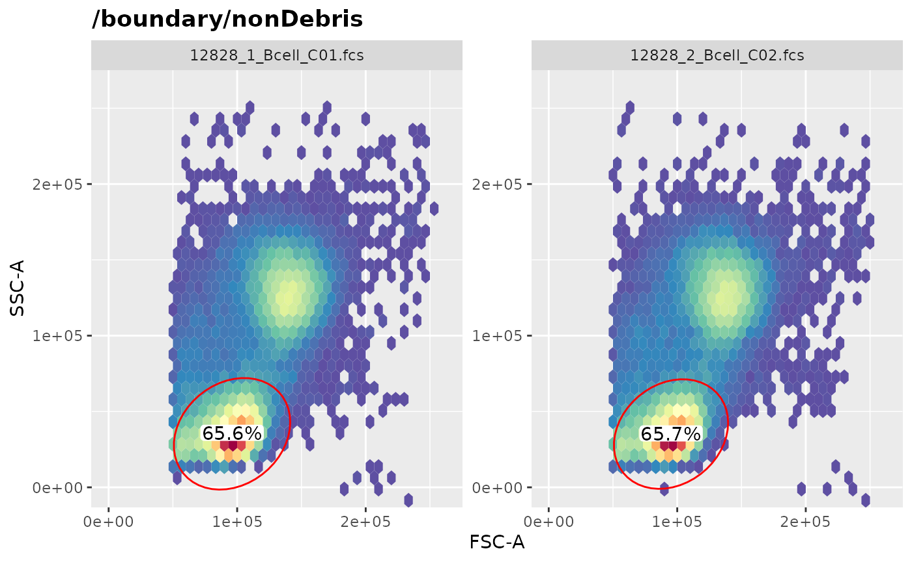

flowWorkspace Introduction: A Package to store and maninpulate gated flow data
Greg Finak gfinak@fhcrc.org, Mike Jiang wjiang2@fhcrc.org
flowWorkspace-Introduction.RmdPurpose
The purpose of this package is to provide the infrastructure to store, represent and exchange gated flow data. By this we mean accessing the samples, groups, transformations, compensation matrices, gates, and population statistics in the gating tree, which is represented as a GatingSet object in R.
There are several ways to generate a GatingSet: * built from scratch within R (which will be demonstrated later) * imported from the XML workspace files exported from other software (e.g. FlowJo, Diva, CytoBank). Details on the importing xml are documented in CytoML package. * generated by automated gating framework from openCyto package * loaded from the existing GatingSet archive (that was previously saved by save_gs() call)
Here we simply load an example GatingSet archive to illustrate how to interact with a GatingSet object.
library(flowWorkspace)
dataDir <- system.file("extdata",package="flowWorkspaceData")
gs_archive <- list.files(dataDir, pattern = "gs_bcell_auto",full = TRUE)
gs <- load_gs(gs_archive)
gs## A GatingSet with 2 samplesWe have loaded a GatingSet with 2 samples, each of which has 14 associated gates.
To list the samples stored in GatingSet:
sampleNames(gs)## [1] "12828_1_Bcell_C01.fcs" "12828_2_Bcell_C02.fcs"Basics on GatingSet
Subsets of a GatingSet can be accessed using the standard R subset syntax [.
gs[1]## A GatingSet with 1 samplesWe can plot the gating tree:
plot(gs, bool = TRUE) The boolean gates(notes) are highlighted in blue color.
The boolean gates(notes) are highlighted in blue color.
We can list the nodes (populations) in the gating hierarchy:
gs_get_pop_paths(gs, path = 2)## [1] "root" "boundary/nonDebris"
## [3] "nonDebris/lymph" "lymph/Live"
## [5] "Live/CD20" "Live/CD19"
## [7] "Live/CD19andCD20" "CD19andCD20/IgD-CD27-"
## [9] "CD19andCD20/IgD+CD27-" "CD19andCD20/IgD-CD27+"
## [11] "CD19andCD20/IgD+CD27+" "CD19andCD20/Transitional"
## [13] "Live/CD19and!CD20" "CD19and!CD20/Plasmablasts"
## [15] "Live/CD3"Note that the path argument specifies the depth of the gating path for each population. As shown, depth of 1 (i.e. leaf or terminal node name) may not be sufficient to uniquely identify each population. The issue can be resolved by increasing the path or simply returning the full path of the node:
gs_get_pop_paths(gs, path = "full")## [1] "root"
## [2] "/boundary/nonDebris"
## [3] "/boundary/nonDebris/lymph"
## [4] "/boundary/nonDebris/lymph/Live"
## [5] "/boundary/nonDebris/lymph/Live/CD20"
## [6] "/boundary/nonDebris/lymph/Live/CD19"
## [7] "/boundary/nonDebris/lymph/Live/CD19andCD20"
## [8] "/boundary/nonDebris/lymph/Live/CD19andCD20/IgD-CD27-"
## [9] "/boundary/nonDebris/lymph/Live/CD19andCD20/IgD+CD27-"
## [10] "/boundary/nonDebris/lymph/Live/CD19andCD20/IgD-CD27+"
## [11] "/boundary/nonDebris/lymph/Live/CD19andCD20/IgD+CD27+"
## [12] "/boundary/nonDebris/lymph/Live/CD19andCD20/Transitional"
## [13] "/boundary/nonDebris/lymph/Live/CD19and!CD20"
## [14] "/boundary/nonDebris/lymph/Live/CD19and!CD20/Plasmablasts"
## [15] "/boundary/nonDebris/lymph/Live/CD3"But full path may not be necessary and could be too long to be visualized. So we provide the path = 'auto' option to determine the shortest path that is still unique within the gating tree.
nodelist <- gs_get_pop_paths(gs, path = "auto")
nodelist## [1] "root" "nonDebris" "lymph" "Live" "CD20"
## [6] "CD19" "CD19andCD20" "IgD-CD27-" "IgD+CD27-" "IgD-CD27+"
## [11] "IgD+CD27+" "Transitional" "CD19and!CD20" "Plasmablasts" "CD3"We can get the gate associated with the specific population:
node <- nodelist[3]
g <- gs_pop_get_gate(gs, node)
g## $`12828_1_Bcell_C01.fcs`
## Ellipsoid gate 'lymph' in dimensions FSC-A and SSC-A
##
## $`12828_2_Bcell_C02.fcs`
## Ellipsoid gate 'lymph' in dimensions FSC-A and SSC-AWe can retrieve the population statistics :
gs_pop_get_stats(gs)[1:10,]## sample pop
## 1: 12828_1_Bcell_C01.fcs root
## 2: 12828_1_Bcell_C01.fcs /boundary/nonDebris
## 3: 12828_1_Bcell_C01.fcs /boundary/nonDebris/lymph
## 4: 12828_1_Bcell_C01.fcs /boundary/nonDebris/lymph/Live
## 5: 12828_1_Bcell_C01.fcs /boundary/nonDebris/lymph/Live/CD20
## 6: 12828_1_Bcell_C01.fcs /boundary/nonDebris/lymph/Live/CD19
## 7: 12828_1_Bcell_C01.fcs /boundary/nonDebris/lymph/Live/CD19andCD20
## 8: 12828_1_Bcell_C01.fcs /boundary/nonDebris/lymph/Live/CD19andCD20/IgD-CD27-
## 9: 12828_1_Bcell_C01.fcs /boundary/nonDebris/lymph/Live/CD19andCD20/IgD+CD27-
## 10: 12828_1_Bcell_C01.fcs /boundary/nonDebris/lymph/Live/CD19andCD20/IgD-CD27+
## count
## 1: 81638
## 2: 80711
## 3: 52927
## 4: 51652
## 5: 11093
## 6: 11126
## 7: 11028
## 8: 765
## 9: 9219
## 10: 590We can plot individual gates. Note the scale of the transformed axes. The second argument is the node path of any depth as long as it is uniquely identifiable.
 More details about gate visualization can be found here.
If we have metadata associated with the experiment, it can be attached to the GatingSet.
d <- data.frame(sample=factor(c("sample 1", "sample 2")),treatment=factor(c("sample","control")) )
pd <- pData(gs)
pd <- cbind(pd,d)
pData(gs) <- pd
pData(gs)## Replicate name Sample Center sample
## 12828_1_Bcell_C01.fcs 1 12828_1_Bcell_C01.fcs 12828 NHLBI sample 1
## 12828_2_Bcell_C02.fcs 2 12828_2_Bcell_C02.fcs 12828 NHLBI sample 2
## treatment
## 12828_1_Bcell_C01.fcs sample
## 12828_2_Bcell_C02.fcs controlWe can subset the GatingSet by its pData directly:
subset(gs, treatment == "control")## A GatingSet with 1 samplesThe underlying flow data can be retrieved by:
cs <- gs_pop_get_data(gs)
class(cs)## [1] "cytoset"
## attr(,"package")
## [1] "flowWorkspace"
nrow(cs[[1]])## [1] 81638Because GatingSet is a purely reference class, the class type returned by gs_pop_get_data is a cytoset, which is the purely reference class analog of a flowSet and will be discussed in more detail below. Also note that the data is already compensated and transformed during the parsing.
We can retrieve the subset of data associated with a population node:
cs <- gs_pop_get_data(gs, node)
nrow(cs[[1]])## [1] 52927GatingHierarchy
We can retrieve a single gating hierarchical tree (corresponding to one sample) by using the [[ extraction operator
gh <- gs[[1]]
gh## Sample: 12828_1_Bcell_C01.fcs
## GatingHierarchy with 15 gatesNote that the index can be either numeric or character (the guid returned by the sampleNames method)
The autoplot method without specifying any node will lay out all the gates in the same plot
autoplot(gh)
We can retrieve the indices specifying if an event is included inside or outside a gate using:
table(gh_pop_get_indices(gh,node))##
## FALSE TRUE
## 28711 52927The indices returned are relative to the parent population (member of parent AND member of current gate), so they reflect the true hierarchical gating structure.
Build the GatingSet from scratch
GatingSet provides methods to build a gating tree from raw FCS files and add or remove flowCore gates (or populations) to or from it.
We start from a flowSet that contains three ungated flow samples:
Then construct a GatingSet from the flowSet:
gs <- GatingSet(fs)Then compensate it:
cfile <- system.file("extdata","compdata","compmatrix", package="flowCore")
comp.mat <- read.table(cfile, header=TRUE, skip=2, check.names = FALSE)
## create a compensation object
comp <- compensation(comp.mat)
#compensate GatingSet
gs <- compensate(gs, comp)New: You can now pass a list of compensation objects with elements named by sampleNames(gs) to achieve sample-specific compensations. e.g.
gs <- compensate(gs, comp.list)Then we can transform it with any transformation defined by the user through trans_new function of scales package.
require(scales)
trans.func <- asinh
inv.func <- sinh
trans.obj <- trans_new("myAsinh", trans.func, inv.func)The inverse transformation is required so that the gates and data can be visualized in transformed scale while the axis label still remains in the raw scale. Optionally, the breaks and format functions can be supplied to further customize the appearance of axis labels.
Besides doing all these by hand, we also provide some buildin transformations: asinhtGml2_trans, flowjo_biexp_trans, flowjo_fasinh_trans and logicle_trans. These are all very commonly used transformations in flow data analysis. User can construct the transform object by simply one-line of code. e.g.
trans.obj <- asinhtGml2_trans()
trans.obj## Transformer: asinhtGml2Once a transformer object is created, we must convert it to transformerList for GatingSet to use.
chnls <- colnames(fs)[3:6]
transList <- transformerList(chnls, trans.obj)Alternatively, the overloaded estimateLogicle method can be used directly on GatingHierarchy to generate a transformerList object automatically.
estimateLogicle(gs[[1]], chnls)## $`FL1-H`
## Transformer: logicle
##
## $`FL2-H`
## Transformer: logicle
##
## $`FL3-H`
## Transformer: logicle
##
## $`FL2-A`
## Transformer: logicle
##
## attr(,"class")
## [1] "transformerList" "list"Now we can transform our GatingSet with this transformerList object. It will also store the transformation in the GatingSet and can be used to inverse-transform the data.
gs <- transform(gs, transList)
gs_get_pop_paths(gs) ## [1] "root"It now only contains the root node. We can add our first rectangleGate:
rg <- rectangleGate("FSC-H"=c(200,400), "SSC-H"=c(250, 400), filterId="rectangle")
nodeID <- gs_pop_add(gs, rg)
nodeID## [1] 2
gs_get_pop_paths(gs) ## [1] "root" "/rectangle"Note that the gate is added to the root node by default if the parent is not specified. Then we add a quadGate to the new population generated by the rectangleGate which is named after the filterId of the gate because the name was not specified when the add method was called.
qg <- quadGate("FL1-H"= 0.2, "FL2-H"= 0.4)
nodeIDs <- gs_pop_add(gs,qg,parent="rectangle")
nodeIDs ## [1] 3 4 5 6
gs_get_pop_paths(gs)## [1] "root" "/rectangle"
## [3] "/rectangle/CD15 FITC-CD45 PE+" "/rectangle/CD15 FITC+CD45 PE+"
## [5] "/rectangle/CD15 FITC+CD45 PE-" "/rectangle/CD15 FITC-CD45 PE-"Here quadGate produces four population nodes/populations named after the dimensions of the gate if names are not specified.
A Boolean gate can also be defined and added to GatingSet:
bg <- booleanFilter(`CD15 FITC-CD45 PE+|CD15 FITC+CD45 PE-`)
bg## booleanFilter filter 'CD15 FITC-CD45 PE+|CD15 FITC+CD45 PE-' evaluating the expression:
## CD15 FITC-CD45 PE+|CD15 FITC+CD45 PE-
nodeID2 <- gs_pop_add(gs,bg,parent="rectangle")
nodeID2## [1] 7
gs_get_pop_paths(gs)## [1] "root"
## [2] "/rectangle"
## [3] "/rectangle/CD15 FITC-CD45 PE+"
## [4] "/rectangle/CD15 FITC+CD45 PE+"
## [5] "/rectangle/CD15 FITC+CD45 PE-"
## [6] "/rectangle/CD15 FITC-CD45 PE-"
## [7] "/rectangle/CD15 FITC-CD45 PE+|CD15 FITC+CD45 PE-"The gating hierarchy is plotted by:
plot(gs, bool=TRUE) Note that Boolean gate is skipped by default and thus needs to be enabled explictily.
Note that Boolean gate is skipped by default and thus needs to be enabled explictily.
Now all the gates are added to the gating tree but the actual data is not gated yet. This is done by calling the recompute method explictily:
recompute(gs)After gating is finished, gating results can be visualized by the autoplot method:
autoplot(gs,"rectangle") #plot one GateMultiple gates can be plotted on the same panel:
autoplot(gs, gs_pop_get_children(gs[[1]], "rectangle")[1:4]) We may also want to plot all the gates without specifying the gate index:
We may also want to plot all the gates without specifying the gate index:
autoplot(gs[[1]])
We can retrieve all the compensation matrices from the GatingHierarchy in case we wish to use the compensation or transformation for the new data,
gh <- gs[[1]]
gh_get_compensations(gh);## Compensation object 'defaultCompensation':
## FL1-H FL2-H FL3-H FL4-H
## FL1-H 1.000000 0.240000 0.03200 0.00113
## FL2-H 0.007770 1.000000 0.14000 0.00274
## FL3-H 0.008690 0.170000 1.00000 0.21000
## FL4-H 0.000795 0.000995 0.00323 1.00000Or we can retrieve transformations:
trans <- gh_get_transformations(gh)
names(trans)## [1] "FL1-H" "FL2-A" "FL2-H" "FL3-H"
trans[[1]]## function (x)
## {
## length * ((asinh(x * sinh(m * log(10))/t) + a * log(10))/((m +
## a) * log(10)))
## }
## <bytecode: 0x5581223835b0>
## <environment: 0x558129a59390>
## attr(,"type")
## [1] "fasinh"If we want to remove one node, simply:
Rm('rectangle', gs)## Warning: 'Rm' is deprecated.
## Use 'gs_pop_remove' instead.
## See help("Deprecated")
gs_get_pop_paths(gs)## [1] "root"As we see, removing one node causes all its descendants to be removed as well.
Archive and Clone
Oftentimes, we need to save a GatingSet including the gated flow data, gates, and populations to disk and reload it later on. This can be done by:
We also provide the gs_clone method to make a full copy of an existing GatingSet:
gs1 <- gs_clone(gs)To only copy the gates and populations without copy the underlying cyto data.
gs2 <- gs_copy_tree_only(gs)This is a lightweight copying which is faster than gs_clone. But be aware the new GatingSet share the same events data (i.e. gs_cyto_data(gs)) with the original one.
Note that the GatingSet is a purely reference class with an external pointer that points to the internal ‘C’ data structure. So make sure to use these methods in order to save or make a copy of an existing GatingSet object. The regular R assignment (<-) or save routine doesn’t work as expected for GatingSet objects.
The cytoframe and cytoset classes
The GatingSet class no longer uses flowFrame and flowSet objects for containing the underlying flow data, but rather now uses the analogous cytoframe and cytoset classes. cytoframe and cytoset are essentially reference classes with pointers to internal ‘C’ data structures and thus enable GatingSet operations to be performed more efficiently.
While working with GatingSet objects will often entail working with cytoframe and cytoset objects implicitly, it is also possible to directly work with objects of both of these classes.
Reading a cytoframe
Instead of read.FCS(), cytoframe objects can be created from FCS files with the load_cytoframe_from_fcs() method. The optional num_threads argument allows for parallelization of the read operation.
files <- list.files(dataDir, "Cyto", full.names = TRUE)
cf <- load_cytoframe_from_fcs(files[1], num_threads = 4)
cf## cytoframe object 'CytoTrol_CytoTrol_1.fcs'
## with 119531 cells and 12 observables:
## name desc range minRange maxRange
## $P1 FSC-A NA 262143 0 262143
## $P2 FSC-H NA 262143 0 262143
## $P3 FSC-W NA 262143 0 262143
## $P4 SSC-A NA 262143 0 262143
## $P5 B710-A CD4 PcpCy55 262143 -111 262143
## ... ... ... ... ... ...
## $P8 V450-A CD3 V450 262143 -111 262143
## $P9 V545-A HLA-DR V500 262143 -111 262143
## $P10 G560-A CCR7 PE 262143 -111 262143
## $P11 G780-A CD45RA PECy7 262143 -111 262143
## $P12 Time NA 262143 0 262143
## 199 keywords are stored in the 'description' slot
## row names(0):Instead of using read.FCSheader() to obtain only the header of the file, just use the text.only argument to load_cytoframe_from_fcs().
cfh <- load_cytoframe_from_fcs(files[1], text.only = TRUE)## Warning in parseFCS(normalizePath(filename), list(which.lines = which.lines, :
## text_only is ignored when format is set to 'h5' or 'tile'!
cfh## cytoframe object 'CytoTrol_CytoTrol_1.fcs'
## with 119531 cells and 12 observables:
## name desc range minRange maxRange
## $P1 FSC-A NA 262143 0 262143
## $P2 FSC-H NA 262143 0 262143
## $P3 FSC-W NA 262143 0 262143
## $P4 SSC-A NA 262143 0 262143
## $P5 B710-A CD4 PcpCy55 262143 -111 262143
## ... ... ... ... ... ...
## $P8 V450-A CD3 V450 262143 -111 262143
## $P9 V545-A HLA-DR V500 262143 -111 262143
## $P10 G560-A CCR7 PE 262143 -111 262143
## $P11 G780-A CD45RA PECy7 262143 -111 262143
## $P12 Time NA 262143 0 262143
## 199 keywords are stored in the 'description' slot
## row names(0):
cytoframe Accessors
The accessor methods function the same as they would for a flowFrame
dim(cf)## events parameters
## 119531 12
colnames(cf)## [1] "FSC-A" "FSC-H" "FSC-W" "SSC-A" "B710-A" "R660-A" "R780-A" "V450-A"
## [9] "V545-A" "G560-A" "G780-A" "Time"## FSC-A FSC-H FSC-W SSC-A B710-A R660-A R780-A V450-A
## [1,] 140733.05 133376 69150.98 91113.96 22311.24 35576.07 14302.16 16232.649
## [2,] 26195.32 26207 65506.79 10115.28 5.04 447.93 682.56 43.700
## [3,] 64294.02 51594 81667.89 174620.03 371.28 851.62 -66.36 335.350
## [4,] 128393.87 103613 81210.08 150625.44 1494.36 5672.20 2979.09 1492.450
## [5,] 127717.88 119616 69974.92 76954.91 2545.20 2272.83 124635.93 8608.899
## [6,] 134347.02 125651 70071.60 70116.48 23052.96 1758.54 5281.15 4849.750
## V545-A G560-A G780-A Time
## [1,] 7644.65 4113.60 12672.00 0.2
## [2,] 77.90 -91.20 18.24 0.4
## [3,] 971.85 273.60 271.68 0.6
## [4,] 28790.70 771.84 988.80 0.6
## [5,] 4190.45 14306.88 58977.60 0.7
## [6,] 2859.50 2249.28 1560.96 0.7
spillover(cf)## $SPILL
## B710-A R660-A R780-A V450-A V545-A
## [1,] 1.000000e+00 3.143890e-02 0.1909655363 3.057568e-03 0.002047231
## [2,] 5.537983e-03 1.000000e+00 0.1768123886 0.000000e+00 0.000000000
## [3,] 9.958625e-05 9.847661e-03 1.0000000000 0.000000e+00 0.000000000
## [4,] 0.000000e+00 8.909845e-05 0.0000000000 1.000000e+00 0.451194675
## [5,] 2.477092e-03 5.235156e-04 0.0000000000 3.796154e-02 1.000000000
## [6,] 1.172236e-01 1.642721e-03 0.0003321532 0.000000e+00 0.000000000
## [7,] 1.420516e-02 4.568956e-04 0.1754022374 8.902497e-05 0.000000000
## G560-A G780-A
## [1,] 3.442413e-04 0.071933810
## [2,] 0.000000e+00 0.006618897
## [3,] 0.000000e+00 0.035399709
## [4,] 1.082746e-04 0.000000000
## [5,] 6.361807e-05 0.000000000
## [6,] 1.000000e+00 0.009219359
## [7,] 4.096870e-02 1.000000000
##
## $spillover
## NULL
##
## $`$SPILLOVER`
## NULL## $FCSversion
## [1] "3"
##
## $`$BEGINANALYSIS`
## [1] "0"
##
## $`$ENDANALYSIS`
## [1] "0"
##
## $`$BEGINSTEXT`
## [1] "0"
##
## $`$ENDSTEXT`
## [1] "0"
##
## $`$BEGINDATA`
## [1] "3264"Pass By Reference
As cytoframe and cytoset are reference classes, copying objects of either class by the assignment operator (<-) will simply provide a copy of the external pointer and so changes made to the copy will also affect the original object.
cf1 <- cf # cf is a reference
colnames(cf1)[1]## [1] "FSC-A"## [1] "t"Views
Extracting a subset of a cytoframe is not computationally intensive, as it merely constructs a view of the data of the original cytoframe. However, both objects still share the same underlying pointer to all of the data and thus changes to a view will affect the data of the original cytoframe.
cf1 <- cf[1:10, 2:3]
dim(cf1)## events parameters
## 10 2
exprs(cf)[2,3]## FSC-W
## 65506.79## FSC-W
## 0To construct a new view of an entire cytoframe, use the [] method rather than the <- operator. This will ensure that a new view is created to the full underlying dataset.
cf1 <- cf[]Deep Copy
It is also possible to perform a deep copy of a cytoframe or a view of it, resulting in two objects pointing to distinct C-level representations of the data. This is accomplished with the realize_view method.
cf <- load_cytoframe_from_fcs(files[1], num_threads = 4) # starting fresh
cf1 <- realize_view(cf[1:10, 2:3])
dim(cf1)## events parameters
## 10 2
exprs(cf)[2,3]## FSC-W
## 65506.79## FSC-W
## 65506.79
exprs(cf1)[2,2] # but does affect the separate data of cf1## FSC-W
## 0Similarly, if a deep copy of all of the data is desired (not a subset), simply call realize_view on the original cytoframe.
Interconversion between cytoframe and flowFrame
Conversion of objects between the cytoframe and flowFrame classes is accomplished with a few coercion methods
fr <- cytoframe_to_flowFrame(cf)
class(fr)## [1] "flowFrame"
## attr(,"package")
## [1] "flowCore"
cf_back <- flowFrame_to_cytoframe(fr)
class(cf_back)## [1] "cytoframe"
## attr(,"package")
## [1] "flowWorkspace"Of course (as a side note), here flowFrame_to_cytoframe() had no knowledge of the cytoframe origin of fr, so cf_back points to a new copy of the underlying data.
identical(cf@pointer, cf_back@pointer) # These point to distinct copies of the data## [1] FALSE
Saving/Loading a cytoframe in h5
A couple of methods handle the task of writing or reading a cytoframe in the HDF5 format on disk
tmpfile <- tempfile(fileext = ".h5")
cf_write_h5(cf, tmpfile)
loaded <- load_cytoframe(tmpfile)
cytoset methods
Most of the above methods for cytoframe objects have cytoset analogs.
For reading in a cytoset from FCS files, use load_cytoset_from_fcs
files <- list.files(dataDir, "Cyto", full.names = TRUE)
cs <- load_cytoset_from_fcs(files, num_threads = 4)
cs## A cytoset with 2 samples.
##
## column names:
## FSC-A, FSC-H, FSC-W, SSC-A, B710-A, R660-A, R780-A, V450-A, V545-A, G560-A, G780-A, TimeOnce constructed, it can be saved/loaded through more efficient archive format.
tmp <- tempfile()
save_cytoset(cs, tmp)
cs <- load_cytoset(tmp, backend_readonly = FALSE)note that backend_readonly is set to TRUE by default to protect the data from accidental changes. So it has to be turned off explicitly if your want to modify the loaded cs
The accessor methods function the same as they would for a flowSet
colnames(cs)## [1] "FSC-A" "FSC-H" "FSC-W" "SSC-A" "B710-A" "R660-A" "R780-A" "V450-A"
## [9] "V545-A" "G560-A" "G780-A" "Time"Subsetting using [ will work in a manner similar to that for a flowSet, but will result in another cytoset that is a view in to the data of the original cytoset. The Subset() method, when called on a cytoset, will also return a cytoset that is a view in to the orignal data rather than a deep copy.
sub_cs <- cs[1]Important: xtraction using [[ on a cytoset will by default return a cytoframe and so will represent a reference of the underlying data. Thus, altering the result of the extraction will alter the underlying data of the original cytoset.
sub_fr <- cs[[1]]
exprs(cs[[1]])[2,2]## FSC-H
## 26207## FSC-H
## 0To return a flowFrame that represents a copy of the data of the original cytoset, you need to use the returnType argument.
sub_cf <- cs[[1, returnType = "flowFrame"]]
exprs(cs[[1]])[2,2]## FSC-H
## 0## FSC-H
## 0Alternatively, if it is easier to remember, get_cytoframe_from_cs will accomplish the same goal
sub_cf <- get_cytoframe_from_cs(cs,1)Finally, the [] and realize_view() methods work in a similar manner for cytoset objects as cytoframe objects. [] will return a view in to the original data while realize_view() will perform a deep copy.
Troubleshooting and error reporting
If this package is throwing errors when parsing your workspace, contact the package author by emails for post an issue on https://github.com/RGLab/flowWorkspace/issues. If you can send your workspace by email, we can test, debug, and fix the package so that it works for you. Our goal is to provide a tool that works, and that people find useful.